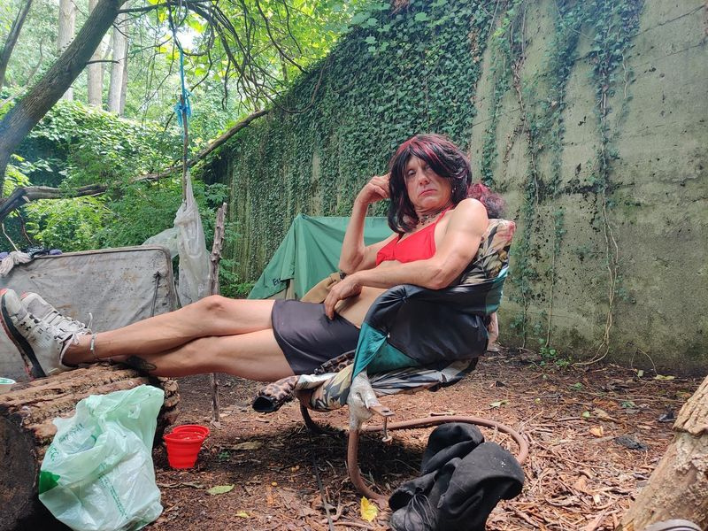

Timeline photos
I think about Brad quite a bit. Though I haven’t seen him in a long time.
Brad is a homeless, cross-dressing white supremacist.
I run into a surprising amount of white supremacists in the homeless community.
I also run into Black racists quite a bit.
For the most part both kinds of racists will work with other races. They just don’t date across race lines.
But it’s usually the white racists that are more hateful. (But maybe that’s just a biased observation on my part because the Black racists I know are more liberal in their thinking and that’s why they hang out with me. I don’t know.)
But there’s no reason to hate the average racist. They aren’t causing oppression. They aren’t doing hate crimes. They just come from families (and often prison gangs) where racism is the way things are organized. They just value race separation.
I’M HERE TO TELL YOU: if you are practicing acceptance of others, the practice will do you no good if you only accept people you like.
Acceptance is the first step to understanding. And understanding is the only way you will ever have the slightest hope of making any changes in society.
When I’m practicing acceptance I usually meditate on Brad. I practice understanding who he is and why he is who he is.
I’m not on Earth to change Brad. I’m on Earth to change Sage. AND NO ONE ELSE.
And the path I’m on is practicing radical love and acceptance of everyone.